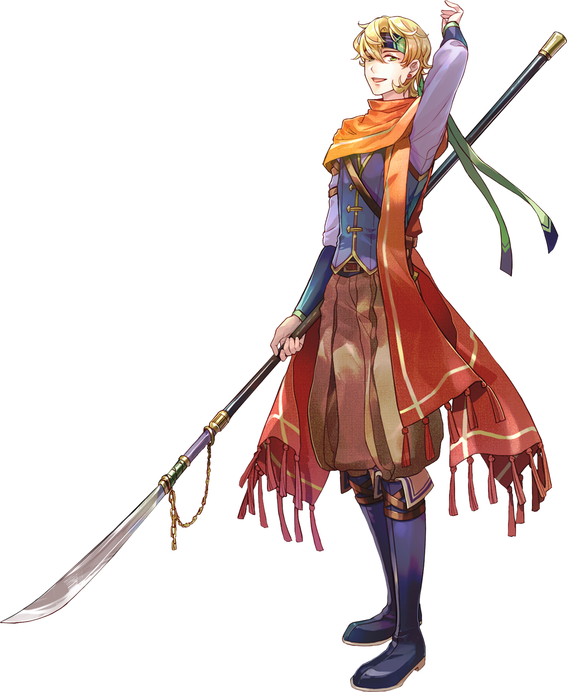
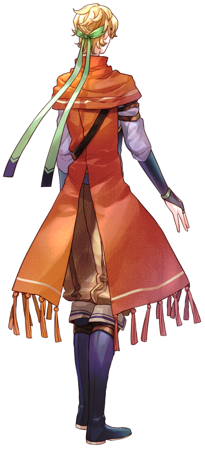

「──我がルイス・グレートアークへ
ようこそ、迷子のお嬢さん」
| 年齢 | 24歳 |
|---|---|
| 誕生日 | 4月16日 |
| 職業 | 客船「ルイス・グレートアーク」船主 |
| 身長 | 183cm |
| 出身 | イギリス（？） |
| 趣味・特技 | チェス |
| 家族構成 | 父・母・姉 |
| イメージカラー | 黄櫨染（こうろぜん） |
横浜の海に永久停泊している客船
「ルイス・グレートアーク」の船主。
祖先は異国の様々な珍しいお宝を求め
生涯船旅をしていたため
代々混血が多く、
わずかに土地神の力を宿していることで
船上の安全はその加護によって保たれている。
本人はイギリス人だと語るが、
ロシア系の血も多く混ざっている。
739年前、
エリクサー（＝変若水）を日本へ持ち込んだ
一族の末裔でもあり、
無許可で武器を所持していることが原因で、
黑芳とは犬猿の仲。